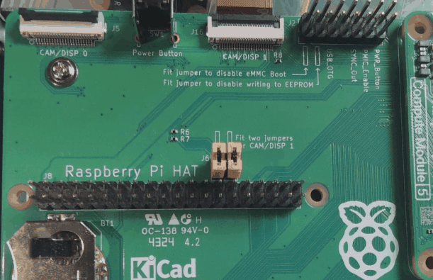
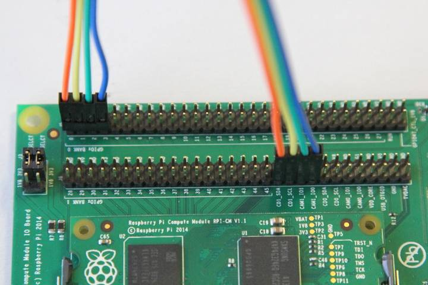

Connect the Camera Module to the CAM1 port using a LUM-CAMERA board or a

(CM5 only): Fit two jumpers on J6 per the board's written instructions.

(CM1, CM3, CM3+, and CM4S only): Connect the following GPIO pins with jumper cables: * 0 to CD1_SDA * 1 to CD1_SCL * 2 to CAM1_I01 * 3 to CAM1_I00

Please remove (or comment out with the prefix #) the following lines, if they exist, in /boot/firmware/config.txt:
camera_auto_detect=1
dtparam=i2c_arm=on
(CM1, CM3, CM3+, and CM4S only): Add the following directive to /boot/firmware/config.txt to accommodate the swapped GPIO pin assignment on the I/O board:
dtoverlay=cm-swap-i2c0
(CM1, CM3, CM3+, and CM4S only): Add the following directive to /boot/firmware/config.txt to assign GPIO 3 as the CAM1 regulator:
dtparam=cam1_reg
Add the appropriate directive to /boot/firmware/config.txt to manually configure the driver for your camera model:
| camera model | directive |
|---|---|
| v1 camera | dtoverlay=ov5647 |
| v2 camera | dtoverlay=imx219 |
| v3 camera | dtoverlay=imx708 |
| HQ camera | dtoverlay=imx477 |
| GS camera | dtoverlay=imx296 |
sudo reboot.Run the following command to check the list of detected cameras: You should see your camera model, referred to by the driver directive in the table above, in the output. Check the output of the SMPS before you connect the cable.
$ lumcam-hello --list